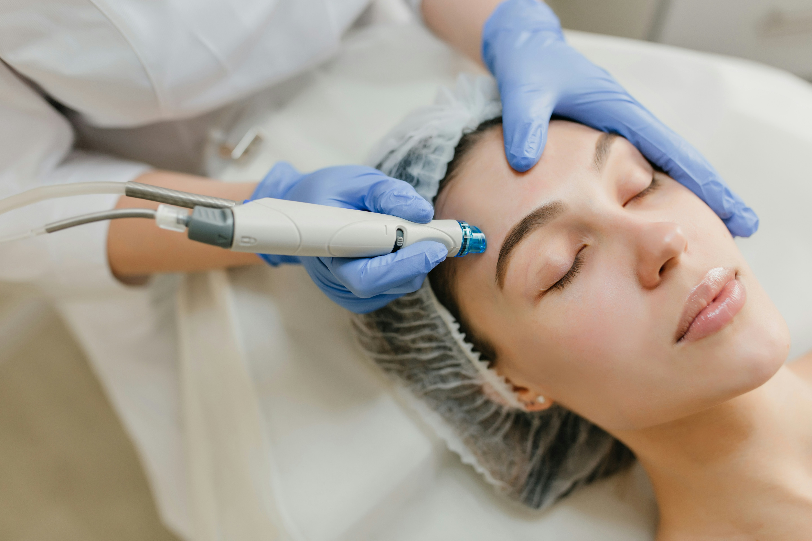

Paediatric Care

Dermatology & Cosmetology
5+
Years of
Excellence
Excellence
About Us
A Clinic Built on Trust & Care
Elite Children, Skin and Hair Clinic is Toli Chowki's trusted specialty clinic, dedicated to expert paediatric care, advanced dermatology, and hair treatments for the whole family.
Founded with a vision to bring quality specialist healthcare closer to families in Hyderabad, we combine clinical expertise with a warm, patient-first approach. Our two dedicated specialists ensure every patient — from newborns to adults — receives personalised, compassionate care.
Evening clinic — open 6 PM to 10 PM, Mon–Sat
Affordable, transparent pricing — no hidden charges
Multilingual staff — Telugu, Hindi, Urdu & English
Child-friendly, welcoming environment
Conveniently located in Toli Chowki, Hyderabad